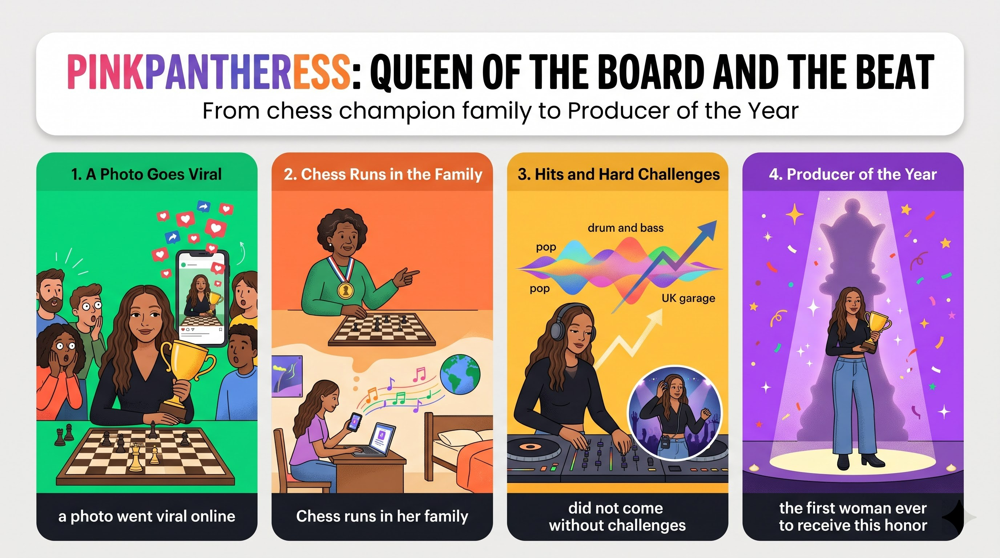

想像你在網路上看到一位流行歌手捧著西洋棋獎盃，幾乎沒有粉絲知道她會下棋。
would you be amazed?想像你在一個西洋棋是家族傳統的家裡長大，阿姨是冠軍，你以為自己會走棋手之路，但音樂先找上門。
growing up in a home where chess runs in the family你在大學宿舍自己製作歌曲、取一個致敬電影的藝名；但若多年聽大音量音樂，聽力會受損。
would not come true without challenges有一天你也許會獲選年度製作人，這項殊榮證明在對的時間走對的棋步有多重要。
be named Producer of the YearImagine (V) + 子句 (O)，破折號後問句 would you be amazed?
Imagine (that) + 子句；be scrolling online（滑手機上網）；amazed（人感到驚訝）。
Imagine you are scrolling online（祈使句＋省略 that 的名詞子句）and see a pop star（對等動詞）holding a chess trophy（現在分詞片語（後位修飾））—would you be amazed?（破折號＋假設問句）語塊 1（想像一下，你正在網路上滑著動態）➔ 語塊 2（看到）➔ 語塊 3 提前（捧著西洋棋獎盃的）➔ 一位流行歌手 ➔ 語塊 4（你會不會大吃一驚？）
第二人稱文章常用 Imagine 開頭，直接翻「想像一下」，把讀者拉進場景。
you are scrolling online and see ... 是完整句，中間省略了 that，名詞子句當受詞。who is holding，修飾 pop star。
Imagine (that) ...＝Picture ...；名詞＋V-ing＝名詞＋who／which is V-ing。Imagine you ... 開頭，是學測作文代入情境的經典起手式。few fans (S) + knew (V) + that 子句 (O)。
few（否定）vs. a few；at all 強調否定。
In July 2025,（時間片語）few fans knew（主幹（否定主詞））that PinkPantheress played chess at all.（that 名詞子句）語塊 1（2025 年 7 月）➔ 語塊 2（幾乎沒有粉絲知道）➔ 語塊 3（PinkPantheress 會下西洋棋）
時間片語順翻，接著處理否定主詞 few fans。
knew；右邊——PinkPantheress played chess 完整。動詞後面掛一整件事，就是名詞子句。few 在這句裡是否定主詞，等於 almost no fans，所以 at all 可以出現來加強語氣。
picture (V) + yourself (O) + growing up ... (O.C.)。
picture oneself V-ing（想像自己……）；grow up in；run in the family。
Now picture yourself（祈使句）growing up in a home（受詞補語（V-ing））where chess runs in the family.（where 關係副詞子句）語塊 1（現在想像一下你自己）➔ 語塊 3 提前（在一個以西洋棋為家族傳統的）➔ 家裡 ➔ 語塊 2（長大）
picture 當動詞，翻「想像」，後面的 yourself growing up 是想像的畫面。
a home（地點）；往右看——chess runs in the family 主詞動詞完整，不缺受詞。左邊有地點先行詞、右邊完整，就是關係副詞 where（＝in which）。如果右邊缺受詞（a home that I love），才用 that／which。
where = in／at which：a home in which chess runs in the family。Picture yourself V-ing ... 是代入讀者的高級句型。Your aunt (S) + is (V) + a chess champion (C)；主幹二 you (S) + think (V) + 子句 (O)。
pursue a career in；think (that) ...；champion（冠軍）。
Your aunt is a chess champion,（主幹一）and you think（主幹二）you will pursue a career in the game.（省略 that 的名詞子句）語塊 1（你的阿姨是西洋棋冠軍）➔ 語塊 2（你也以為）➔ 語塊 3（自己將來會以西洋棋為職業）
前半句順翻「你的阿姨是西洋棋冠軍」。
you will pursue ... 完整句，省略了 that。
what if + 子句：music (S) + comes (V) + first。
What if ...?＝要是……會怎樣？；did 代替 came first，避免重複。
But what if（假設問句開頭）music comes first,（假設子句）as it did for her?（as 比較子句）語塊 1（但如果）➔ 語塊 2（音樂先找上你）➔ 語塊 3（就像當初找上她一樣）➔ 呢？
What if 翻「但如果……呢？」，問號留到最後。
it did for her 的 did 是代動詞，代替 came first。英文不喜歡重複同一個動詞片語，用 do／did 替身就好。
What if ...? 製造懸念，是第二人稱文章轉場的好工具。You (S) + might start (V) + posting songs (O)；主幹二 people (S) + could take (V) + notice (O)。
start + V-ing；take notice＝注意到；might／could 語氣較委婉。
You might start posting songs（主幹一）from your university room,（地點片語）and people around the world could take notice.（主幹二）語塊 2 提前（你可能會在大學宿舍裡）➔ 語塊 1（開始發布歌曲）➔ 語塊 3（世界各地的人也許就會注意到你）
might 翻「可能會」，保持假設語氣。
and 後面 people around the world 提前修飾：「世界各地的人」。
You might start ...、右邊 people ... could take notice，各有主詞和情態助動詞，是對等子句。這句沒有從屬子句，地點 from your university room 和 around the world 都是介系詞外掛背包。
You (S) + would produce (V1) + your own beats (O1) + and give (V2) + yourself (IO) + a unique name (DO)。
give + 人 + 物；a nod to；beat（節拍）。
You would produce your own beats（主幹一）and give yourself a unique name（主幹二（授與））that is a nod to a film（主格關代子句）you love.（省略關代的子句）語塊 1（你會自己製作節拍）➔ 語塊 2（為自己取一個）➔ 語塊 3＋4 提前（向你最愛的電影致敬的）➔ 獨特藝名
前半句「你會自己製作節拍」順翻。
a unique name，右邊 is a nod to ... 缺主詞 ➔ 主格關代，不能省。a film，右邊 you love 缺受詞（love 什麼？）➔ 受格關代，可以直接省略。
Each new song (S) + would be (V) + proof (C)，that 子句是 proof 的同位語。
proof that + 子句；talent（才能）；practice（練習）。
Each new song would be proof（主幹）that talent grows with practice.（that 同位語子句）語塊 1（每一首新歌都會證明）➔ 語塊 2（才華會隨著練習成長）
把 proof 轉成動詞「證明」，句子會比較順。
talent grows with practice 主詞動詞完整，不缺任何東西！左邊抽象名詞（proof、fact、news、idea）＋右邊完整句 ➔ 同位語子句，用來說明「證據的內容是什麼」。關代的右邊一定會缺主詞或受詞。
... is proof that ... 是論點收束句，作文一用就加分。your dream (S) + would not come true (V) + without challenges (M)，Yet 是句首轉折連接詞。
come true（實現）；not ... without；Yet（然而）。
Yet（句首轉折）your dream would not come true（主幹（否定））without challenges.（雙重否定）語塊 1（然而）➔ 語塊 2（你的夢想）➔ 語塊 3 轉肯定（不可能毫無挑戰就實現）
Yet 先翻「然而」，把讀者從想像拉回現實。
Yet your dream would not ... without ...，提醒讀者現實面。If you play loud music for years＋主句 you could damage your hearing，so 後接祈使句 always keep the volume ...。
keep + O + at a safe level；hearing（聽力）；volume（音量）。
If you play loud music for years,（if 條件子句）you could damage your hearing,（主句）so always keep the volume at a safe level.（so＋祈使句）語塊 1（如果你多年來都把音樂開得很大聲）➔ 語塊 2（聽力就可能受損）➔ 語塊 3（所以一定要把音量維持在安全範圍）
If 子句在句首，照順序翻「如果你……」。
主句 could damage 翻「就可能受損」，用「就」接條件。
you play loud music for years 是完整句，表條件，用現在式代替未來式。always keep the volume ... 沒有主詞，是祈使句，直接給讀者建議。第二人稱文章用祈使句收尾，就像老師直接叮嚀你。
you (S) + might be named (V) + Producer of the Year (C)，破折號後是同位語 a great honor，that 子句修飾 honor。
be named + N；show how much + S + V；the right moves at the right time。
One day, you might even be named Producer of the Year（主幹（被動））—a great honor（破折號同位語）that shows（主格關代子句）how much the right moves at the right time matter.（how much 名詞子句）語塊 1（有一天，你甚至可能獲選為年度製作人）➔ 語塊 2（那是一項極高的殊榮）➔ 語塊 3（證明了）➔ 語塊 4（在對的時間走對的棋步有多重要）
前半句被動 be named 翻「獲選為」。
a great honor 解釋「獲選年度製作人」這件事。shows ... 缺主詞 ➔ 主格關代。the right moves ... matter，不能倒裝成 how much do ... matter。
1. 請選出最適合填入 (1) 的字：
grow up：長大。2. 請選出最適合填入 (2) 的字：
unique。3. 請選出最適合填入 (3) 的字：
few ... at all：幾乎沒有人知道。4. 請選出最適合填入 (4) 的字：
be named + N：被評為。5. 請選出最適合填入 (5) 的字：
Yet。6. If you have a ________ for drawing, you should join the art club.
have a talent for：有……的天分。7. Can you turn the ________ up? I can't hear the song clearly.
turn up the volume：調高音量。8. Your aunt has won the national contest three times; she is a three-time ________.
a three-time champion。9. You can ________ your own songs on a laptop with free software.
produce songs：製作歌曲。10. 下列哪一句文法正確？
picture／imagine + O + V-ing：想像某人正在……。11. 「你會為自己取一個向你最愛的電影致敬的名字。」最佳英譯是：
12. 下列哪一句文法正確？
13. According to the passage, how did people react to the chess photo?
14. What does the writer warn readers about?
15. Why does the writer use "you" throughout the passage?